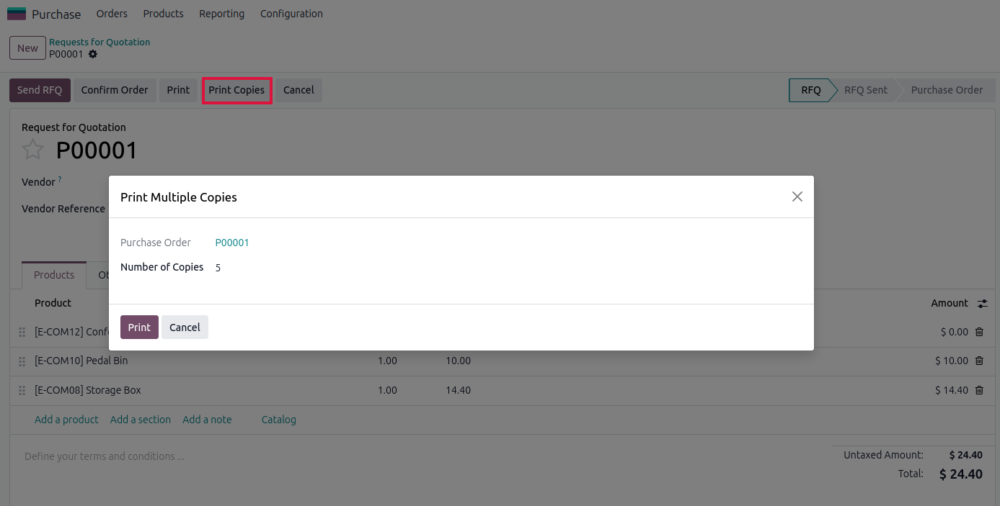

🖨️ Purchase Order Multiple Print
Print a purchase order as many times as you need in one go — straight from a button on the
order, no copy-pasting and no printing one PDF at a time.
✨ Key Features
- Adds a Print Copies button to the purchase order header — right next to the standard print action
- A simple wizard asks how many copies you need
- Returns a single merged PDF containing all the copies, in one download
- Uses the standard Odoo Purchase Order report, so your own layout and branding are respected
- Keyboard shortcut P opens the wizard for a faster workflow
- Interface translated into 90+ languages
✅ Compatibility
- Odoo version: 19.0, 18.0
- Editions: Community and Enterprise
- Hosting: Odoo.sh, On-Premise
📸 Screenshots

Choose the number of copies and print them in one click
🛠️ Usage
- Open any order under Purchase → Orders.
- Click the Print Copies button in the order header (or press P).
- Enter the Number of Copies you need.
- Click Print to download a single PDF with all the copies.
📦 Installation
- Copy the module to your Odoo addons directory
- Update the app list
- Install the module from the Apps menu
🧑💻 Maintainer
Developed by Attefeh Falah at Tech Stars SPC — For support or customization, contact
attefehfalah@gmail.com
or visit
attefehfalah.com
and techstarssolution.com.